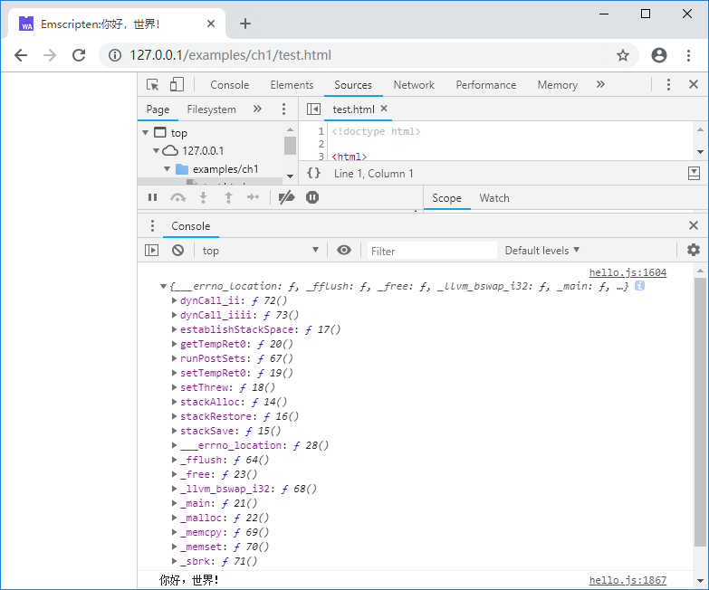
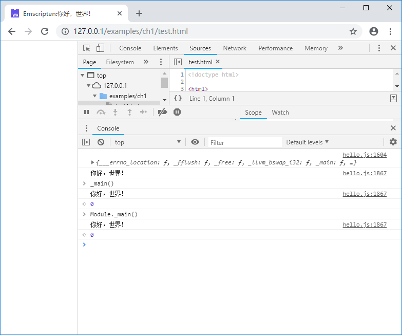

1.3 Taking a look at the Emscripten glue code
Open the glue code hello.js generated by Emscripten in the previous section (1.2), we can see that most of the operations are around the global object Module, which is the core of the Emscripten program runtime.
tips Skip 1.3.1 and 1.3.2 will not affect the reading of subsequent chapters. But if you are interested in the details of the Emscripten module loading, this section will help you understand the structure of the glue code. As the version of Emscripten is upgraded, the glue code generated may change. The code shown in this section is based on Emscripten 1.38.11.
1.3.1 Loading WebAssembly Module
The loading of the WebAssembly Module(.wasm file) is done in the doNativeWasm() function. The core parts are as follows:
function instantiateArrayBuffer(receiver) {
getBinaryPromise().then(function(binary) {
return WebAssembly.instantiate(binary, info);
}).then(receiver).catch(function(reason) {
err('failed to asynchronously prepare wasm: ' + reason);
abort(reason);
});
}
// Prefer streaming instantiation if available.
if (!Module['wasmBinary'] &&
typeof WebAssembly.instantiateStreaming === 'function' &&
!isDataURI(wasmBinaryFile) &&
typeof fetch === 'function') {
WebAssembly.instantiateStreaming(fetch(wasmBinaryFile, { credentials: 'same-origin' }), info)
.then(receiveInstantiatedSource)
.catch(function(reason) {
// We expect the most common failure cause to be a bad MIME type for the binary,
// in which case falling back to ArrayBuffer instantiation should work.
err('wasm streaming compile failed: ' + reason);
err('falling back to ArrayBuffer instantiation');
instantiateArrayBuffer(receiveInstantiatedSource);
});
} else {
instantiateArrayBuffer(receiveInstantiatedSource);
}
This dazzling array of code actually only does a few things:
- Try to create an
WebAssembly.Instanceusing theWebAssembly.instantiateStreaming()method; - If the streaming creation fails, use the
WebAssembly.instantiate()method instead to create anWebAssembly.Instance; - The return
WebAssembly.Instanceafter successful instantiation is handled by thereceiveInstantiatedSource()method.
receiveInstantiatedSource() related codes are as follows:
function receiveInstance(instance, module) {
exports = instance.exports;
if (exports.memory) mergeMemory(exports.memory);
Module['asm'] = exports;
Module["usingWasm"] = true;
removeRunDependency('wasm-instantiate');
}
......
function receiveInstantiatedSource(output) {
// 'output' is a WebAssemblyInstantiatedSource object which has both the module and instance.
// receiveInstance() will swap in the exports (to Module.asm) so they can be called
assert(Module === trueModule, 'the Module object should not be replaced during async compilation - perhaps the order of HTML elements is wrong?');
trueModule = null;
receiveInstance(output['instance'], output['module']);
}
The receiveInstantiatedSource() method calls the receiveInstance() method. The exported object of the instance is passed to the Module['asm'] by the following instruction:
Module['asm'] = exports;
If we manually add the code of printing the exported object of the instance in the above function:
function receiveInstance(instance, module) {
... ...
Module['asm'] = exports;
console.log(Module['asm']); //print instance.exports
... ...
The console will output：

It can be seen that after the above series of code runs, Module['asm'] saves the exported object of the WebAssembly instance - and the exported function is just the most important entry for the external call of the WebAssembly instance.
1.3.2 Wrap exported fucntions
In order to facilitate the call, Emscripten provides wrappers for the functions exported in C/C++. In hello.js, we can find a lot of wrap code like these:
... ...
var _main = Module["_main"] = function() {
assert(runtimeInitialized, 'you need to wait for the runtime to be ready (e.g. wait for main() to be called)');
assert(!runtimeExited, 'the runtime was exited (use NO_EXIT_RUNTIME to keep it alive after main() exits)');
return Module["asm"]["_main"].apply(null, arguments) };
var _malloc = Module["_malloc"] = function() {
assert(runtimeInitialized, 'you need to wait for the runtime to be ready (e.g. wait for main() to be called)');
assert(!runtimeExited, 'the runtime was exited (use NO_EXIT_RUNTIME to keep it alive after main() exits)');
return Module["asm"]["_malloc"].apply(null, arguments) };
... ...
In Emscripten, when the C function is exported, the underscore "_" is added before the function name. This shows that the above code provides the encapsulation of main() and malloc() functions respectively. var _main and Module._main are the corresponding main() function in hello.cc. We can verify this by manually executing _main() and Module._main() in the browser console:

Unsurprisingly, both executed the main() function in the C code and output "你好，世界！".
1.3.3 Asynchronous loading
The WebAssembly instance is created by the WebAssembly.instantiateStreaming()/WebAssembly.instantiate() method, and both methods are asynchronous, which means that the Emscripten runtime is not ready when the .js file is loaded. If we modify test.html, execute Module._main() immediately after loading .js like this:
<body>
<script src="hello.js"></script>
<script>
Module._main();
</script>
</body>
The console will output the following error message:
Assertion failed: you need to wait for the runtime to be ready (e.g. wait for main() to be called)
Solving this problem requires establishing a notification mechanism when the runtime is ready. For this, Emscripten provides a variety of solutions. The easiest way is to fire a notification in the main() function, but for many modules, the main() function is not required, so the method we often used is the onRuntimeInitialized callback which does not depend on the main() function. An example of this method is shown as follow:
<body>
<script>
Module = {};
Module.onRuntimeInitialized = function() {
//do sth.
Module._main();
}
</script>
<script src="hello.js"></script>
</body>
The basic idea is to inject a method called onRuntimeInitialized into Module before the Module is initialized. After the Runtime of Emscripten is ready, the method will be called. In hello.js, we can observe the calling process of the callback:
function run(args) {
... ...
ensureInitRuntime();
preMain();
if (Module['onRuntimeInitialized']) Module['onRuntimeInitialized']();
if (Module['_main'] && shouldRunNow) Module['callMain'](args);
postRun();
... ...
}
tips In the sample code of this book, the
onRuntimeInitializedcallback method is used extensively as the test function entry.